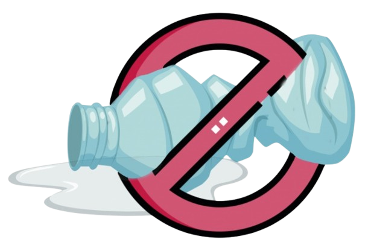

 DESPLASTIFICATE
La mala gestión de residuos plásticos tiene consecuencias graves para el medio ambiente, la salud humana y la economía.
Los microplásticos podrían causar inflamación, estrés oxidativo, daño celular y podrían estar relacionados con enfermedades como el cáncer.
La falta de conciencia ambiental en relación con el plástico genera una serie de problemas, desde la contaminación de los ecosistemas hasta la afectación a la salud humana.